久瀬診療所 小山元気医師
“ともに成長する” がモットー
当施設は地域医療・家庭医療のメッカとして知られ、
これまでに学生・実習生・研修医・専攻医などが延べ20,000人を超える研修受け入れを行ってきました。
この地域だけでなく広く日本中を支える人材を育成するべく、
「皆さんと共に成長していくこと」をモットーに教育に向き合っています。
私たちは「地域を支え、地域に学び、地域でともに育つ」を合言葉に、
地域を舞台とした医療者教育に力を入れています。
医学生や研修医はもちろんのこと、
専攻医、若手指導医が総合診療、家庭医療、在宅医療などを学ぶ場が整っています。
さらには、多職種の学生や医療従事者、地元高校生等にも地域医療・地域包括ケアを学んでいただけるよう、
様々な取り組みを続け、全国に発信しています
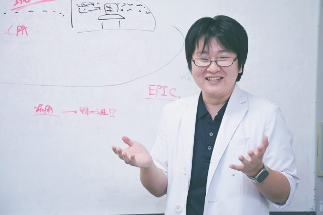
当施設は地域医療・家庭医療のメッカとして知られ、
これまでに学生・実習生・研修医・専攻医などが延べ20,000人を超える研修受け入れを行ってきました。
この地域だけでなく広く日本中を支える人材を育成するべく、
「皆さんと共に成長していくこと」をモットーに教育に向き合っています。
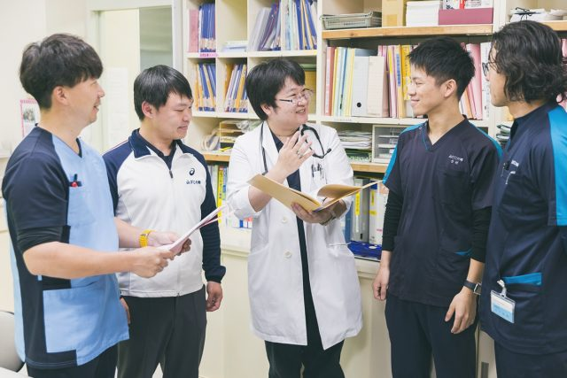
どんな方でも自己効力感を持てるよう、自分でできることからどんどん取り組んでもらえるよう配慮しています。まだ現場をよく知らない学生でも、実際の患者さん・利用者さんにご協力いただき、地域医療に求められることは何かを学ぶことができます。
また、日々生じた疑問に対し、過去の文献から最新の知見まで幅広く巡ることを通して、知識のアップデート・補強もできるように支援いたします。
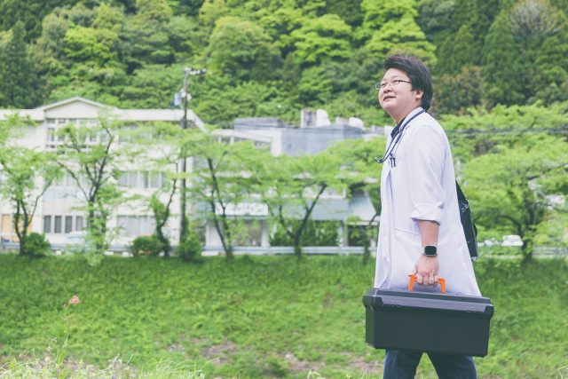
自然豊かで季節ごとに変わる景色が綺麗な中、この揖斐川町に暮らす人々は心の温かい方ばかりです。
この町は昔から「地域で人を診る」ことに特化してきた歴史もあり、長年引き継がれてきたその志を大切に語り継いでいきたいと考えます。

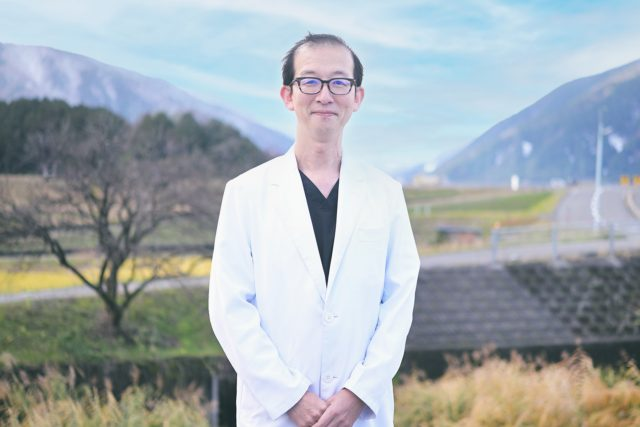
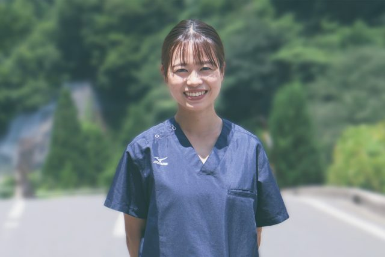
求められる役割に応じて協調、変容でき、あらゆる問題に対応できる能力をもった医師の育成
これが、私たちの目標とする医師像です。
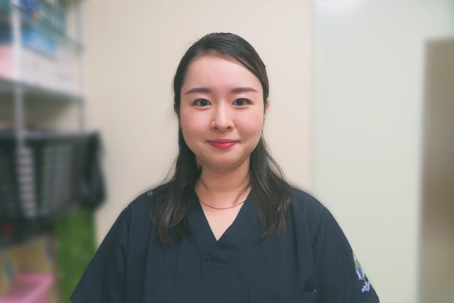
森本医師
東京女子医科大学医学部医学科卒業。基幹病院を東京北医療センターとして地域のススメにて後期研修を実施。
久瀬診療所
高齢化率の高い山間部で研修を行うことで老年医学や継続医療を集中的に学び、今後の包括的な医療介入に活かしたいと思ったからです。また、久瀬診療所で研修された他職種の方々から、教育体制が整っており家庭医療を学べるとお勧めされたことも決め手でした。
研修中は「信頼」というキーワードがいつも自分の中に浮かんでいました。
「病院に入院するのは嫌だけど山びこなら行ってもいい。」「診療所の先生に来てもらえたからもう安心。」など、言葉の節々から、この地域の住民の方々が診療所や山びこの郷のことを本当に信頼していらっしゃるのが伺えました。長い時間をかけて繋がりを大事にしてきたこと、単に病気を診るだけでは無く、その人の生活や背景、家族や思いなどの全体像を診てきたからこそ生まれた信頼なのだと感じました。
また、久瀬診療所では指導医の先生方が常に相談に乗ってくださり、診療面だけでなく、生活や精神面でのサポートも手厚くして下さるので、とても働きやすかったです。
総合診療専門医・家庭医療専門医・その他の若手医師のネクストステップとして、以下のようなフェローシップコースを実施しています。
プライマリ・ケアの場での診療を目指す医師が、キャリアのネクストステップとして、診療所の運営責任者・研修指導医の役割を担いながら、臨床、教育、組織マネジメント、地域ケア、研究の5領域においてその能力を向上し、今後の日本のプライマリ・ケアの発展の中核となる人材へ成長することを目指しているプログラムです。
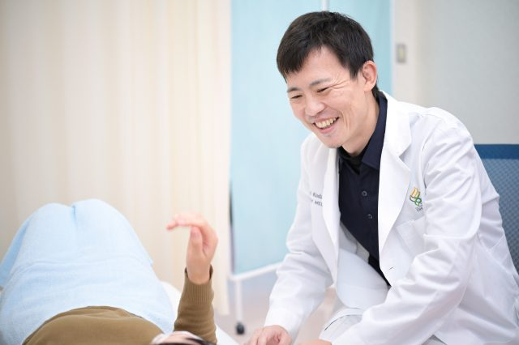
新潟大学医学部医学科 卒業。東京北医療センター初期研修、家庭医療後期研修プログラム「地域医療のススメ」を終了
家庭医療専門医となり、シティ・タワー診療所で2年間在宅医療を中心に勤務
2021年4月〜2024年4月まで久瀬診療所といびがわ診療所で在宅部門を中心に勤務。
揖斐川町の「まち」の地域（旧揖斐川町）において在宅医療部門（サテライトオフィス）のスタートアップを担うというプロジェクトを担当
研修医の頃、久瀬診療所で地域研修をさせていただき、患者さんや地域をまるごと見られる環境が自分の目指す医師像にマッチしていたため。
JADECOMプライマリケア・リーダーシップ・フェローコースがあり、総合診療・家庭医療指導医としてさらに成長できる場所であると感じたため。
自分の医師としてのプロフェッショナリズムは研修医の頃に揖斐川町で育まれました。
患者様に寄り添い「チーム〇〇さん」の仲間で悩みながらそれぞれの人生の一部を支えられることは喜びでした。
在宅医療部門を立ち上げる中で、揖斐川町を知ること、互いをよく知る多職種連携がケアの質を相乗的に上げること、行政との連携の仕方、組織マネジメント、自分自身の強みと弱みなど数えきれない多くの学びがありました。
今後、診療所でプライマリケアを展開したいと考えるすべての医師に、揖斐川町での プライマリケア・リーダーシップ・フェローコースをお勧めしたいと思います。
地域医療に貢献できる診療看護師の育成のため「GIM-NP」プログラムを開始して研修を行っています。
基本理念は、超高齢社会、医療格差、地方・へき地における医師不足、医療の高度化など、日本の医療問題に対して柔軟に対応するために、幅広い知識を持ち全人的に地域の人を診る・看ることができる診療看護師の育成です。基盤となる内科系の医療から広範囲の医療、そして地域包括ケアを是非体験してください。
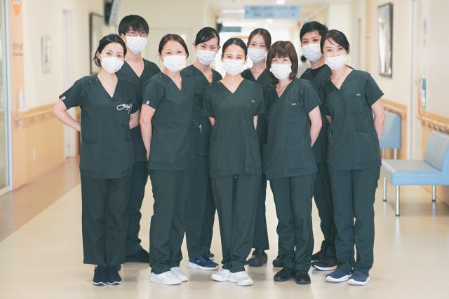
診療看護師とは
NP協議会が実施するNP資格認定試験に合格した者で、患者のQOL向上のために医師や多職種と連携・協働し、倫理的かつ科学的根拠に基づき一定レベルの診療を行うことができる看護師のことです。
診療看護師 NP｜卒後臨床研修 奨学金 NP研修センター (jadecom-np.jp)
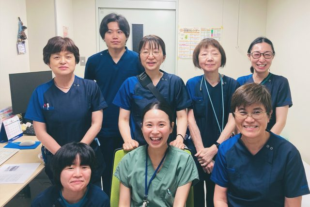
昭和大学保健医療学部看護学科、東京医療保健大学大学院看護学研究科高度実践看護コース卒業。
東京ベイ浦安・市川医療センター、東京北医療センターにて臨床研修。（写真手前中央）
高齢化の進む山間部での医療支援について学ぶことができ、かつ診療看護師（NP）や特定ケア看護師の受け入れに先生方のご理解・ご協力的をいただける環境だったので、こちらで研修をお願いしました。
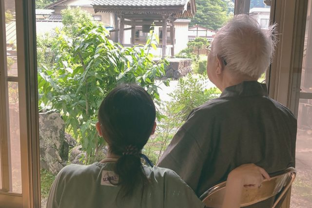
一言で表現すると“幸せを感じる研修”でした。
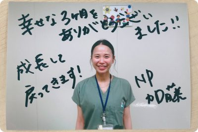
ご家族との関わりの中から全人的に患者を捉えることを、多職種との協働により個別性を尊重したケアやチーム医療の真髄を学ぶことができました。目の前にいる患者さんは、治療を受けるために生きているわけではなく、病と共に生活をしている一人の尊厳ある存在であることに改めて気付かされました。一人一人に人生のストーリーがあること、生きること同様死を迎えることも生活の一部であることを教わりました。
先生方には、医療資源の限られた地域で診療看護師にどのような可能性があるのか共に考え、チャレンジしていく場を与えていただきました。
これからは、学んだことを活かして診療看護師を医師やコメディカルのパートナーとして、協働していく未来を創造していきたいと思います。
学校名・病院名：サンビレッジ国際医療福祉専門学校
利用者さんとコミュニケーションを取るときに、言葉による会話だけはなく、身振り手振りや、傍にいて傾聴することも大事なコミュニケーションだと分かりました。また、利用者さんの食事についても、栄養はもちろんのこと多職種で連携して美味しい料理の提供をされていることが分かりました。
実習開始のラジオ体操をする前、利用者さんに挨拶をすると笑顔と一緒に優しく挨拶を返していただき、大変嬉しく思いました。また、医療と介護の連携した支援を目の前で見れたことについては、とても良い経験が出来たと思っています。
山びこの郷は、揖斐の山間地にある地域に根付いた唯一の介護施設で、地域住民の大事な入所型介護施設だと分かりました。また、利用者に寄り添うことのできる優しい職員の方が大勢働いていらっしゃることが分かりました。
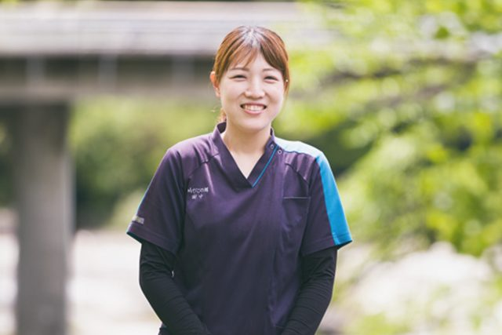
当センターに入職して8年目、理学療法士として8年目を迎えた田中愛さん
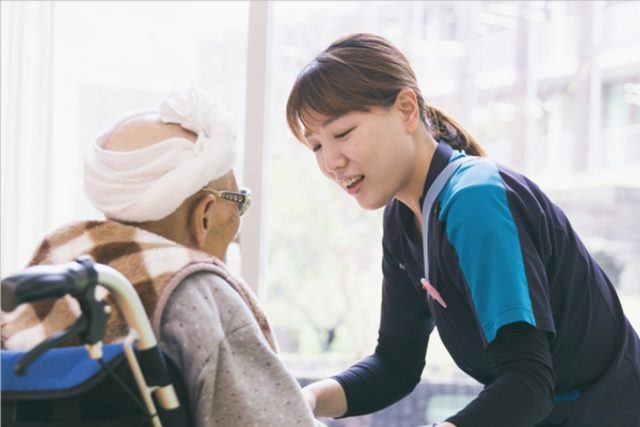
当センターは医療と介護の複合施設となっており、様々なサービスを提供しています。理学療法士としても施設・通所・訪問のサービスに携わっており、１人１人の状態やニーズに合わせたリハビリテーションを提供しています。多職種連携も活発行っており、みんなで日々共に考えながら、よりよいケアが提供できるように努めています。
基本となる研修プログラムに加え、多職種連携教育や地域活動など、当センターならではの体験もしていただき、楽しく研修に取り組んでもらいながら、地域での理学療法士の役割等も感じてもらえると嬉しいです。私自身も研修生の方から学ぶことが多く、実習期間中、互いに学びながら成長していければと思っています。
いびがわ町は自然豊かで、山や川、時に動物に癒されています。人柄は明るく元気な方ばかりで、長く暮らしてきたふるさとを大切にしてい方が多いと感じます。私も関わる方々や自然に元気をもらいながら日々の業務にあたることができています。
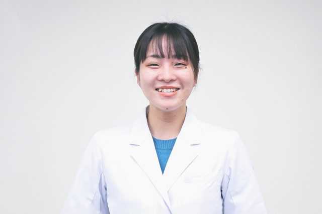
東京北医療センターで初期研修中
診療所で外来や往診を中心に研修させて頂いています。患者さんとの距離が近く、関わる時間が多くてとても楽しいです。患者さんの実際に住んでいる環境を自分の目で見て生活に寄り添った治療の提供することの重要さや難しさを感じました。
初期研修の2年間を通して、患者さん個々に合わせた医療を提供する家庭医の考え方はどの診療科に進むにしても非常に重要で、正解がなく実践するのが難しいことを学びました。ここで学んだマインドを忘れずにこれからも働いていきたいです。
久瀬で関わってくださった方々が全員温かく接してくださりとても楽しく、勉強になった1ヵ月間でした。
学んだことを今後も活かせるように頑張ります。
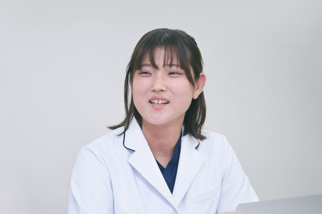
順天堂大学医学部卒業。
横須賀市立うわまち病院にて研修中
訪問診療や訪問看護など医療の側面だけでなく、地域で行われる会議や福祉活動など幅広く見学させていただきました。地域全体としてどのような医療・介護サービスを提供できるのかを見渡すことができました。
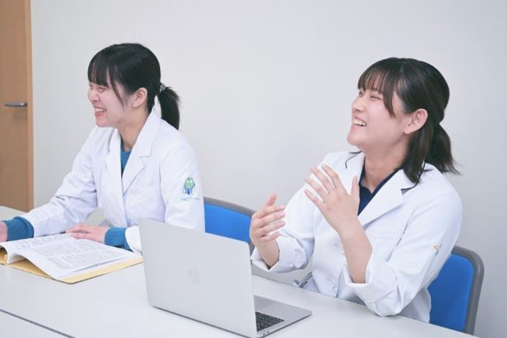
研修を通して、家庭医が全国に増えてほしいという気持ちが強まりました。
日本の医療制度では、自由に好きな病院にかかることができます。便利に見える反面、様々な医療機関でばらばらに治療される結果、不要な検査や投薬で医療費が増大したり患者さんの負担が増えているという問題もあります。揖斐の指導医を含め家庭医は、患者さん継続的に、包括的に診療しています。患者さんの人となりや生活環境、いままでの治療歴などすべて知ったうえで、患者さんに最適な医療を提供しているのが印象的でした。より多くの方が家庭医をかかりつけとして持てる社会になってほしいと思いました。
自治医科大学医学部
久瀬診療所は老健との複合施設であり、揖斐郡の地域医療を支えていると伺っています。揖斐郡の医療に長年携わる先生方のもとで、その地域に根ざした医療について深く学びたいと思い、選びました。
訪問診療や外来、施設カンファレンスなど多くの地域医療の現場を見学することができました。医師や看護師だけでなく、施設の職員全員が協力して患者さんをサポートしていく姿を見て、臓器を診るのではなく『人を診る』ということを実感することができました。
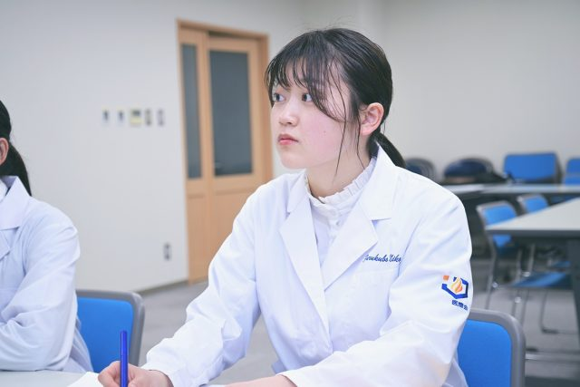
自治医科大学医学部
岐阜県は地域医療の先駆的な自治体として名高く、その現場を間近で見ることで
現在の地域医療の現状を感じることができるのではないかと考え、こちらの診療所を選ばせていただきました。
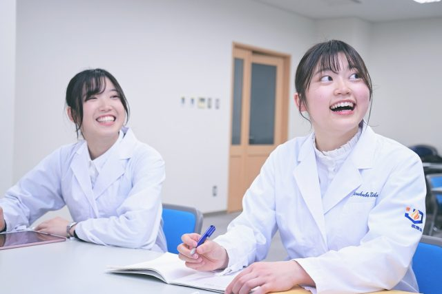
医療複合施設であることを活かした多職種連携が行われていたり、医師が患者さんと向き合うときの注意点や工夫などを診察に同席することで肌で感じたり、座学ではできない貴重な体験をさせていただきました。
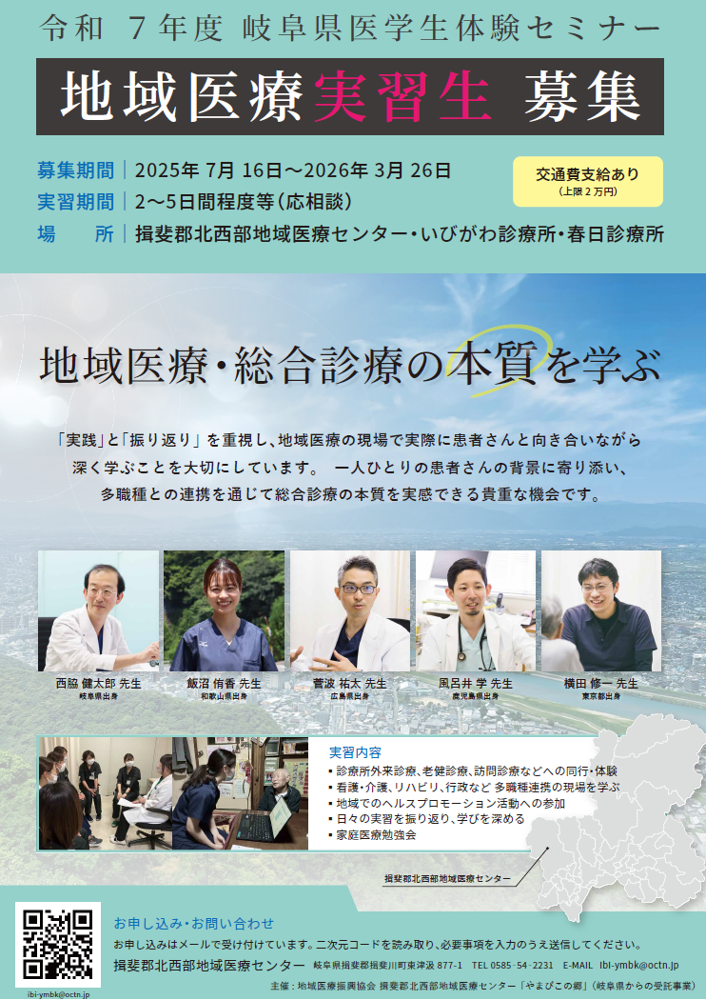
岐阜県医学生体験セミナーチラシ_2025 ←こちらをクリック
お申し込みはチラシのＱＲコード又はホームページ上の問合せフォーム（最上部右側の緑ボタン）や
岐阜県のホームページから可能です。
まずはご連絡くださいませ。